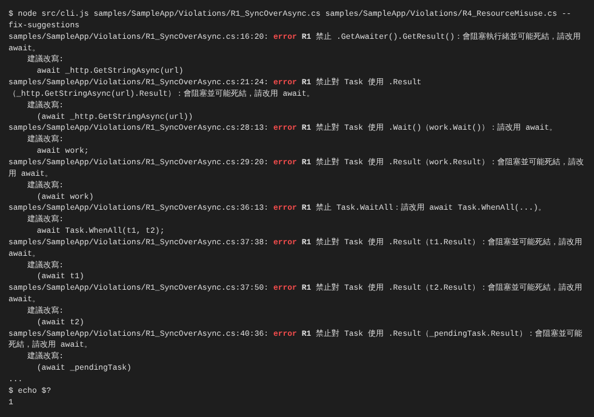
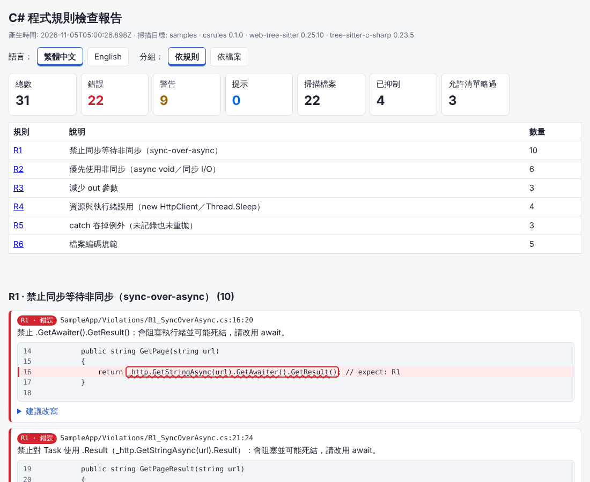
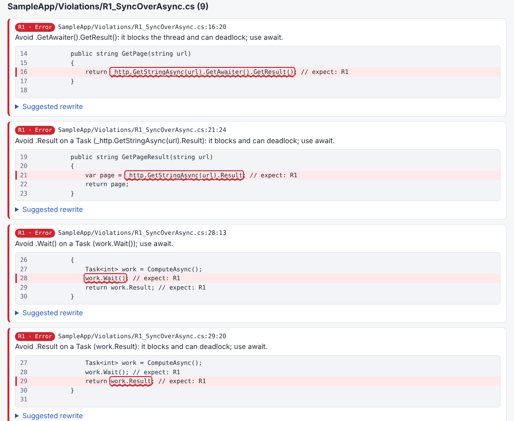
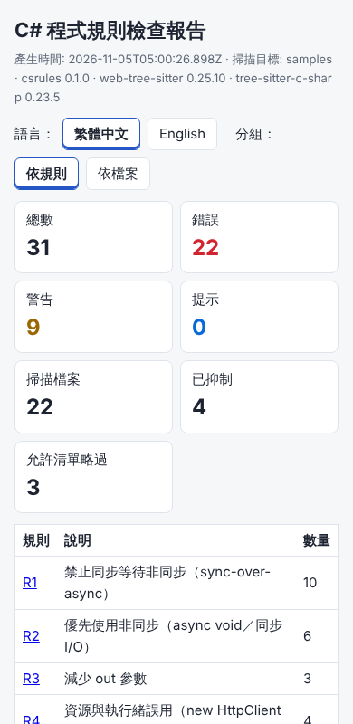

概覽
csrules 是一個用 Node.js 寫的 C# 程式規則檢查器。它用 tree-sitter 的 WebAssembly 版本（web-tree-sitter）加上 C# 文法（tree-sitter-c-sharp 套件內附的 .wasm）把 .cs 檔解析成語法樹，再用每條規則各自的 tree-sitter query（.scm 檔）找出違規。整個過程不需要安裝 .NET SDK、不需要編譯專案，因此可以在任何有 Node.js 的 CI agent 或開發機上執行。
- 六條團隊規則：R1 禁止 sync-over-async、R2 優先使用 async、R3 減少 out 參數、R4
new HttpClient()與 async 中的Thread.Sleep、R5 catch 吞例外、R6 檔案編碼規範（位元組層級）。詳見 規則一覽。 - 可設定：
csrules.json控制每條規則的開關、嚴重度、允許清單（路徑 glob、屬性名稱、類別名稱）；也支援內嵌抑制註解// csrules-disable-next-line R1。 - 多種輸出：主控台（
檔案:行:欄 嚴重度 規則 訊息）、JSON、SARIF 2.1.0（GitHub code scanning、VS Code SARIF Viewer、Azure DevOps）、自帶的 HTML 報告（繁中 / 英文切換、依規則或依檔案分組、程式碼片段紅框標示）。 - CI 友善：有錯誤就回傳結束碼 1；
--fail-on warning可讓警告也擋下建置。 - 建議改寫：
--fix-suggestions列出每個問題的改寫範例（不會自動修改檔案）。 - 除錯：
--debug傾印每個 query 比對到的語法節點與 captures；JSONL 日誌含等級。
資料夾結構
11-csharp-rules-treesitter/
├─ src/
│ ├─ cli.js 命令列進入點（參數解析、輸出、結束碼）
│ ├─ engine.js 載入 wasm、執行 query、允許清單、抑制註解
│ ├─ config.js csrules.json 預設值與合併
│ ├─ i18n.js 繁中 / 英文訊息
│ ├─ logger.js JSONL 日誌（含等級，OS 感知的預設位置）
│ ├─ glob.js 路徑 glob 比對
│ ├─ rules/ r1.js … r5.js（語法樹規則）、r6-encoding.js（位元組規則）、util.js
│ └─ reporters/ console.js、sarif.js、html.js
├─ queries/ 每條規則的 tree-sitter query（*.scm）
├─ samples/ 範例 C# 方案：Violations/（刻意違規）、Compliant/（不應有任何問題）
│ └─ encoding-bad/ R6 刻意違規的編碼錯誤檔案（Big5、無 BOM 的 .ps1、含中文的批次檔）
├─ test/ npm test（node:test + Playwright）
├─ examples/ 範例 HTML 報告與截圖
├─ scripts/ 文件截圖輔助腳本
├─ csrules.bat / csrules.ps1 / run-sample.bat / run-tests.bat / setup.bat Windows 啟動器
└─ README.html（本文件）/ README.md範例報告：examples/report.html（由 npm test 以 samples/ 產生）。
規則一覽
每條規則的 ID 會出現在主控台、SARIF 的 ruleId、抑制註解中。嚴重度預設值可在 csrules.json 中改為 error / warning / note。
| ID | 檢查內容 | 為什麼 | 違規 / 合規範例 | 設定（rules.Rn） |
|---|---|---|---|---|
| R1 預設 error |
禁止 sync-over-async：.GetAwaiter().GetResult()、Task 的 .Result、.Wait()、Task.WaitAll/WaitAny。單元測試專案與 Startup 例外。 |
在有 SynchronizationContext 的環境（WinForms/WPF/舊版 ASP.NET）會死結；在 ASP.NET Core 會佔住執行緒造成執行緒集區飢餓。 | |
allow.paths（預設 **/*.Tests/**、**/*.UnitTests/**、**/*Tests.cs、**/Startup.cs）、allow.attributes（Fact、Theory、Test、TestMethod…）、allow.classes（Startup、*Tests）、taskNamePattern、strictResult |
| R2 預設 warning |
(a) async void 方法／區域函式（事件處理常式 (object sender, XxxEventArgs e) 除外）；(b) public 方法中呼叫已有 Async 版本的同步 I/O（File.ReadAllText、ExecuteReader、HttpClient.Send、SaveChanges…）。 |
async void 的例外無法被呼叫端 await／捕捉，常直接讓程序崩潰；同步 I/O 會阻塞執行緒，降低伺服器吞吐量。 |
|
asyncVoid、syncIo、publicOnly（預設 true）、syncIoCalls（清單：{ "call": "File.ReadAllText", "async": "File.ReadAllTextAsync" } 或 { "method": "Send", "receiver": "http|client", "async": "SendAsync" }） |
| R3 預設 warning |
方法或區域函式宣告了 out 參數。Try* 模式、Deconstruct、override、extern（P/Invoke）預設忽略。 |
out 不能用在 async 方法、不好組合；tuple 或結果物件更易讀、易測試。 |
|
ignoreTryPattern、ignoreDeconstruct、ignoreOverrides、ignoreExtern（皆預設 true）；allow.attributes 預設 DllImport、LibraryImport |
| R4 預設 error |
(a) 在方法本體內 new HttpClient()（含 HttpClient c = new();）；(b) 在 async 方法／async lambda 中呼叫 Thread.Sleep。欄位初始化子、static 欄位、建構函式不報。不強制 ConfigureAwait（原因） |
每次 new HttpClient 會留下 TIME_WAIT socket，量大時 socket 耗盡，也不會更新 DNS；Thread.Sleep 在 async 程式中會佔住執行緒集區執行緒。 |
|
httpClient、threadSleep（開關） |
| R5 預設 error |
catch 區塊既沒有記錄日誌也沒有重新拋出（含空的 catch { }）。 |
吞掉的例外讓問題在正式環境「無聲無息」，事後無從除錯。 | |
ignoreExceptionTypes（預設 OperationCanceledException、TaskCanceledException）、loggingPatterns（判斷「有記錄」的呼叫，正規表示式比對被呼叫者文字，例如 _logger.LogError、Log.Error、TrackException） |
| R6 預設 error |
位元組層級的編碼檢查：.bat/.cmd 必須純 ASCII；.ps1 含非 ASCII 必須有 UTF-8 BOM；.cs/.md/.csproj/.json 必須是有效 UTF-8；.md 不可有 BOM；含 U+FFFD 也會報。 |
繁中 Windows 的 cmd.exe 以 CP950 讀批次檔、Windows PowerShell 5.1 無 BOM 時以 ANSI 讀 .ps1，中文會變亂碼；Big5 的 .cs 在 Linux CI 或 git diff 中會壞掉。 | |
asciiOnly、bomIfNonAscii、utf8、bomForbidden（副檔名清單）、allow.paths。.cs 允許 BOM（Visual Studio 預設會加）。 |
為什麼不強制 ConfigureAwait(false)
- ASP.NET Core 與主控台程式沒有 SynchronizationContext，
ConfigureAwait(false)在應用程式碼中沒有效果，強制加上只會增加雜訊。 - 它真正有意義的地方是可重用的類別庫（可能被 WinForms/WPF 呼叫）。從語法樹無法可靠判斷一個專案是不是類別庫、也無法知道 await 的對象型別。
- 若類別庫要強制，建議改用 Roslyn 的
CA2007，只在類別庫專案的.editorconfig中啟用（見 與 Roslyn Analyzer 比較）。
「Task 嗎？」的判斷方式（R1）
語法樹沒有型別資訊，所以 R1 對 .Result / .Wait() 只在接收者「看起來像 Task」時才報，以避免把 validation.Result 這類一般屬性誤判：
- 接收者是呼叫名稱以
Async結尾的方法，或Task.Run、Task.FromResult、Task.WhenAll…； - 接收者是同一檔案中宣告為
Task、Task<T>、ValueTask… 的變數／欄位／參數／屬性，或var x = XxxAsync(...)（未 await）； - 接收者名稱符合
taskNamePattern（預設(^|_)task$|Task$）。
.GetAwaiter().GetResult() 與 Task.WaitAll/WaitAny 則一律報。想要更嚴格（任何 .Result 都報）可設 "strictResult": true。
快速開始
需求：Node.js 20 以上（已在 Node 22 驗證）。不需要 .NET SDK。
Windows（繁體中文）
- 在檔案總管中雙擊
setup.bat（會執行npm ci，依package-lock.json安裝固定版本）。 - 雙擊
run-sample.bat：掃描samples\，主控台列出問題與建議改寫，並自動開啟output\report.html。預期最後顯示[run-sample] exit code: 1（範例是刻意違規的）。 - 檢查自己的專案（在「命令提示字元」中）：
批次檔流程：csrules.bat D:\src\MyCompany.Orders --html output\orders.html --sarif output\orders.sarifcsrules.bat（純 ASCII、CRLF）→csrules.ps1（UTF-8 with BOM）→node src/cli.js。結束後會顯示結束碼並pause；在 CI 中請直接呼叫 node（設定環境變數CSRULES_NO_PAUSE=1也可略過 pause）。 - 執行測試：雙擊
run-tests.bat。
Linux / macOS
cd 11-csharp-rules-treesitter
npm ci
npm test
node src/cli.js samples --fix-suggestions --html output/report.html
echo $? # 1（範例刻意違規）
node src/cli.js /path/to/your/solution --sarif output/report.sarif也可以用 npm run sample（等同掃描 samples 並輸出 output/report.{html,sarif,json}）。
為自己的方案建立設定檔
cd D:\src\MyCompany.Orders
node D:\tools\11-csharp-rules-treesitter\src\cli.js --init # 寫出含全部預設值的 csrules.json使用說明
CLI 選項結束碼設定檔抑制註解GitHub ActionsAzure DevOpsVS Code SARIF Viewer
CLI 選項
node src/cli.js [選項] <檔案或資料夾...>| 選項 | 說明 |
|---|---|
--config <檔案> | 指定設定檔。未指定時，從第一個目標（檔案則取其資料夾）往上層找 csrules.json，最後找目前資料夾；都沒有就用內建預設值。 |
--rules R1,R3 | 只執行指定規則。 |
--lang zh-TW|en | 主控台與 HTML 報告預設語言（優先序：參數 > 環境變數 CSRULES_LANG > 設定檔 language > zh-TW）。JSON/SARIF 一律同時包含兩種語言。 |
--format console|json | 標準輸出格式。 |
--json / --sarif / --html <檔案> | 另存結果（可同時指定，資料夾會自動建立）。 |
--fix-suggestions | 在主控台列出建議改寫（不會修改檔案；JSON/SARIF/HTML 一律包含建議）。 |
--fail-on error|warning|none | 哪個嚴重度會讓結束碼變成 1（預設 error）。 |
--debug | 把 query 比對到的節點、captures、略過原因輸出到 stderr 與日誌，見 除錯與日誌。 |
--log-dir、--log-level | JSONL 日誌位置與等級（debug/info/warn/error/off）。 |
--print-config、--init、--version、--help、--no-color | 印出合併後設定、寫出預設設定檔、版本（含文法 ABI）、說明、關閉顏色。 |
路徑：主控台顯示相對於目前資料夾的路徑（在 VS Code 終端機可直接點選）；JSON 的 file 與 SARIF 的 uri 則相對於掃描目標資料夾（允許清單的 glob 也以此為準），JSON 另有 path 欄位為相對於目前資料夾的路徑。
結束碼
| 代碼 | 意義 |
|---|---|
| 0 | 沒有達到 --fail-on 等級的問題 |
| 1 | 有達到 --fail-on 等級的問題（預設：至少一個 error） |
| 2 | 參數錯誤、設定檔錯誤（找不到、JSON 錯誤、未知規則或嚴重度）、目標不存在 |
| 3 | 內部錯誤（例如 wasm 載入失敗、文法 ABI 不相容） |
設定檔 csrules.json
使用者設定會「深層合併」到預設值上；陣列是整個取代（例如自訂 allow.paths 時，預設的路徑不會保留，需要的話請一併寫入）。完整預設值請執行 node src/cli.js --init 或 --print-config。範例（即 samples/csrules.json）：
{
"language": "zh-TW",
"exclude": ["**/bin/**", "**/obj/**"],
"rules": {
"R1": {
"severity": "error",
"allow": {
"paths": ["**/*.Tests/**", "**/Startup.cs"],
"attributes": ["Fact", "Theory", "TestMethod"],
"classes": ["Startup"]
}
},
"R2": { "severity": "warning" },
"R3": { "severity": "warning", "ignoreTryPattern": true },
"R4": { "severity": "error" },
"R5": { "severity": "error" },
"R6": { "severity": "error" }
}
}include/exclude：相對於掃描目標資料夾的 glob（支援**、*、?、{a,b}，不分大小寫，路徑一律用/）。R6 另外會檢查.bat/.cmd/.ps1/.md/.csproj/.json。- 每條規則都有
enabled、severity、allow（pathsglob、attributes屬性名稱、classes類別名稱 glob；R6 只支援paths）。屬性允許清單會比對該節點外層所有方法、屬性、類別上的屬性（[Fact]、[Xunit.Fact]、[FactAttribute]都算Fact）。 - 被允許清單略過的項目不會出現在結果中，但 JSON 的
allowed陣列會列出原因（例如path **/Startup.cs）。
內嵌抑制註解
// csrules-disable-next-line R1 -- 舊版同步 API，v3 移除
return http.GetStringAsync(url).Result;
try { Legacy(); } catch { } // csrules-disable-line R5
// csrules-disable-file R3 （整個檔案）
// csrules-disable-next-line （不寫規則 = 全部規則）- 規則 ID 只取緊接在指令後面的那串（
R1, R3），後面的說明文字即使提到其他 ID 也不會生效。 - 註解是由 tree-sitter 的
(comment)節點取得，所以字串中的同樣文字不會被誤認。 - R6 是位元組層級檢查，不支援註解抑制，請用
rules.R6.allow.paths。
GitHub Actions（上傳 SARIF 到 code scanning）
假設本工具放在儲存庫的 .csrules/ 資料夾，並在儲存庫根目錄放 csrules.json（記得把 .csrules/** 加入 exclude）。從儲存庫根目錄掃描，SARIF 中的路徑就會是相對於儲存庫的路徑。
name: csrules
on: [push, pull_request]
jobs:
csrules:
runs-on: ubuntu-latest
permissions:
contents: read
security-events: write
steps:
- uses: actions/checkout@v4
- uses: actions/setup-node@v4
with:
node-version: 22
- run: npm ci
working-directory: .csrules
- run: node .csrules/src/cli.js . --sarif csrules.sarif --html csrules.html --lang en
- uses: github/codeql-action/upload-sarif@v3
if: always()
with:
sarif_file: csrules.sarif
- uses: actions/upload-artifact@v4
if: always()
with:
name: csrules-report
path: csrules.html未在本環境驗證 本專案沒有連線到 GitHub 執行上面的 workflow；SARIF 結構已由 npm test 驗證必要欄位（version、runs、tool.driver.rules、ruleId/ruleIndex、level、message、artifactLocation、region）。
Azure DevOps Pipelines
steps:
- task: NodeTool@0
inputs:
versionSpec: '22.x'
- script: npm ci
workingDirectory: .csrules
displayName: Install csrules
- script: node .csrules/src/cli.js . --sarif $(Build.ArtifactStagingDirectory)/CodeAnalysisLogs/csrules.sarif --html $(Build.ArtifactStagingDirectory)/csrules.html
displayName: Run csrules (fails the build on errors)
- task: PublishBuildArtifacts@1
condition: always()
inputs:
PathtoPublish: $(Build.ArtifactStagingDirectory)/CodeAnalysisLogs
ArtifactName: CodeAnalysisLogsWindows agent 也可以用 script: node .csrules\src\cli.js . ...。名為 CodeAnalysisLogs 的 artifact 可由 Marketplace 的「SARIF SAST Scans Tab」擴充功能顯示。未在本環境驗證
在 VS Code 中檢視 SARIF
- 安裝 Microsoft 的「SARIF Viewer」擴充功能（ID：
MS-SarifVSCode.sarif-viewer）。 - 執行
node src/cli.js <你的方案資料夾> --sarif output/result.sarif。 - 在 VS Code 開啟
output/result.sarif，SARIF 面板會列出結果，點選即可跳到原始碼位置（路徑以originalUriBaseIds.SRCROOT= 掃描目標資料夾為基準）。
未在本環境驗證 本環境沒有 VS Code；以上步驟依擴充功能的公開說明撰寫。
逐步驗證指南
以下每一步都附上預期結果，數字都是在本機實際執行得到的。Windows 請把 / 換成 \ 或直接使用對應的 .bat。
- 安裝與版本
預期：顯示npm ci node src/cli.js --version"web-tree-sitter": "0.25.10"、"tree-sitter-c-sharp": "0.23.5"、"grammarAbi": 15。 - 自動測試
預期：npm test# tests 36、# pass 36、# fail 0（約 5–6 秒；含 Playwright 開啟 HTML 報告與本說明文件）。Windows 可雙擊run-tests.bat。 - 掃描範例方案
預期最後三行與結束碼：node src/cli.js samples --fix-suggestions --html output/report.html --sarif output/report.sarif
依規則：R1 10、R2 6、R3 3、R4 4、R5 3、R6 5。每個違規行在共 31 項：錯誤 22、警告 9、提示 0（掃描 22 個檔案，約 300 ms） 已抑制 4 項（csrules-disable 註解） 已依允許清單略過 3 項 （結束碼 1）samples/的原始碼行尾都有// expect: Rn標記，npm test會逐行比對。
- 合規程式碼不會誤報
預期：node src/cli.js samples/SampleApp/Compliant沒有發現問題。，結束碼 0。這兩個檔案刻意包含容易誤判的寫法：非 Task 的.Result/.Wait()、Monitor.Wait、事件處理常式的async void、TryGetCached(out ...)、staticHttpClient、同步方法中的Thread.Sleep、有記錄或重拋的 catch。 - 允許清單：
samples/SampleApp/Startup.cs與samples/SampleApp.Tests/中的.GetAwaiter().GetResult()、.Result不會出現在結果中。用 JSON 看原因：
預期：node src/cli.js samples --format json --log-level off"allowed"陣列有 3 筆，reason分別為path **/*.Tests/**（2 筆）與path **/Startup.cs。 - 抑制註解
預期：只剩 1 項（第 23 行，因為上一行抑制的是 R3 而不是 R1），並顯示node src/cli.js samples/SampleApp/Violations/Suppressed.cs已抑制 3 項，結束碼 1。 - R6 編碼檢查
預期 5 項 error：node src/cli.js samples/encoding-badBig5Legacy.cs（無效 UTF-8，可能是 Big5）、bom-readme.md（不應有 BOM）、含中文的批次檔 legacy.bat（第 2 行，非 ASCII 位元組 0xE9）、沒有 BOM 的 no-bom.ps1、notes-big5.md（無效 UTF-8）。而samples/SampleApp/scripts/中的合規批次檔與 BOM 版 PowerShell 腳本不會被報。 - HTML 報告：開啟
output/report.html（或 examples/report.html）。預期：上方卡片顯示 總數 31／錯誤 22／警告 9；規則表的數量與主控台一致；每個問題附前後 2 行程式碼，問題行底色標紅，問題範圍有紅框與紅色波浪底線；按「English」切換英文，按「依檔案」改為依檔案分組。

手機寬度（390px）也不會出現水平捲軸：
- 結束碼
node src/cli.js samples --rules R3 # 只有 warning → 0 node src/cli.js samples --rules R3 --fail-on warning # → 1 node src/cli.js samples --rules R9 # 未知規則 → 2 - 除錯輸出
預期：stderr 出現node src/cli.js samples/SampleApp/Violations/R4_ResourceMisuse.cs --debug --rules R4[debug] {"kind":"match",...}（query captures）與{"kind":"skip",...,"reason":"not inside a method body"}（static 欄位上的 new HttpClient 被略過的原因），並印出日誌檔路徑。 - 編碼稽核（儲存庫工具）
預期：第一行指令顯示node ../tools/audit-text.mjs . node ../tools/audit-text.mjs samples/encoding-badproblems=0與(skipped fixture folder: samples/encoding-bad)；第二行直接稽核刻意違規的資料夾，顯示problems=4（批次檔非 ASCII、.ps1 缺 BOM、Big5 的 .md、帶 BOM 的 .md；稽核工具不檢查 .cs，所以 Big5 的 .cs 只會被 csrules 的 R6 抓到）。
開發者指南
架構tree-sitter query新增規則版本與 ABI變更紀錄
架構
cli.js ─ parseArgs → loadConfig(csrules.json) → createLogger(JSONL)
└─ engine.run(targets)
├─ collectFiles：include/exclude glob，.cs + R6 目標副檔名
├─ loadLanguage：Parser.init() → Language.load(tree-sitter-c_sharp.wasm) → setLanguage 探測 ABI
├─ loadQueries：queries/*.scm 編譯成 Query
└─ 每個檔案 checkFile（最多 4 個並行，讀檔非同步、解析在 wasm 內同步）
├─ R6 checkEncoding(Buffer) ← 位元組層級，不需語法樹
├─ parser.parse(text) → tree
├─ comments.scm → 抑制註解表
└─ 每條規則 rule.check(ctx)
ctx.matches('R1-sync-over-async') → [{ capture 名稱: 節點 }]
ctx.report(node, 訊息 key, 參數, 建議改寫)
→ 允許清單（路徑/屬性/類別）→ 抑制註解 → findings
└─ reporters：console / JSON / SARIF 2.1.0 / HTML所有 I/O 都是 async（fs/promises）；日誌寫入以 Promise 佇列串接，結束前 flush()。
tree-sitter query 怎麼運作
tree-sitter 把原始碼解析成具體語法樹（CST）。query 是 S 運算式樣式，@名稱 是 capture，(#eq? @x "...")、(#match? @x "regex")、(#any-of? @x "a" "b") 是文字述詞（web-tree-sitter 會在 query.matches() 中自動套用）。例如 R1 的 .GetAwaiter().GetResult()：
((invocation_expression
function: (member_access_expression
expression: (invocation_expression
function: (member_access_expression name: (identifier) @_awaiter))
name: (identifier) @_getresult)) @get_result
(#eq? @_awaiter "GetAwaiter")
(#eq? @_getresult "GetResult"))query 負責「找候選節點」，型別相關或需要往上看祖先節點的判斷（例如「是否在 async 方法中」、「接收者像不像 Task」、「catch 中有沒有 throw 或記錄」）在 src/rules/rN.js 中用節點 API（parent、childForFieldName）完成。想知道某段程式碼的節點型別，可用 --debug 看 captures 的 type，或參考 node_modules/tree-sitter-c-sharp/src/node-types.json。
| query 檔 | 用途 |
|---|---|
queries/R1-sync-over-async.scm | GetResult、.Result、.Wait()、Task.WaitAll/WaitAny |
queries/task-decls.scm | 收集 Task 型別宣告與 var x = XxxAsync() 的名稱 |
queries/R2-prefer-async.scm | async void 方法與區域函式、候選 I/O 呼叫 |
queries/R3-out-params.scm | 含 out 參數的方法與區域函式 |
queries/R4-resource-misuse.scm | new HttpClient()、目標型別 new()、Thread.Sleep |
queries/R5-swallowed-catch.scm、R5-handled.scm | catch 子句；catch 本體內的 throw 與呼叫 |
queries/comments.scm | 抑制註解 |
如何新增一條規則（例：R7 禁止 DateTime.Now）
- 新增
queries/R7-datetime-now.scm：((member_access_expression) @now (#match? @now "^(System\\.)?DateTime\\.Now$")) - 新增
src/rules/r7.js：export default { id: 'R7', queries: ['R7-datetime-now'], check(ctx) { for (const m of ctx.matches('R7-datetime-now')) { ctx.report(m.now, 'R7.now', {}, 'DateTime.UtcNow // 或注入 TimeProvider'); } }, }; - 在
src/i18n.js的RULES_META與訊息表加入R7/R7.now（繁中與英文）；SARIF 規則清單會自動帶入，HTML 報告也會自動出現新列。 - 在
src/config.js的DEFAULT_CONFIG.rules加入R7: { enabled: true, severity: 'warning', allow: { paths: [], attributes: [], classes: [] } }，在src/engine.js的AST_RULES、ALL_RULE_IDS加入 R7，並在src/reporters/sarif.js的HELP補一句說明。 - 在
samples/SampleApp/Violations/新增違規檔，違規行尾寫// expect: R7；在test/rules.test.js的ruleIds加入'R7'，再更新test/cli.test.js、test/report.test.js中的總數，執行npm test。
版本與 ABI 相容性（常見地雷）
| 套件 | 版本（精確鎖定） | 說明 |
|---|---|---|
web-tree-sitter | 0.25.10 | 支援語言 ABI 13–15；ESM 具名匯出 { Parser, Language, Query } |
tree-sitter-c-sharp | 0.23.5 | 套件內附 tree-sitter-c_sharp.wasm，ABI 15。npm 安裝時會跑 node-gyp-build 安裝原生綁定（有 prebuild，本工具不使用原生綁定，只讀 .wasm） |
| Node.js | >= 20（驗證於 22.23.4） |
實測：同一個文法 wasm 搭配 web-tree-sitter 0.24.7、0.22.6、0.20.8 時，Language.load() 會成功，但 parser.setLanguage() 丟出 Incompatible language version 15. Compatibility range 13 through 14.。因此 src/engine.js 在載入後立刻用一個探測 Parser 呼叫 setLanguage，失敗時給出「請使用 web-tree-sitter >= 0.25」的錯誤（結束碼 3），npm test 也會檢查 ABI 範圍與版本鎖定。tree-sitter-wasms 套件（收錄多種文法）未採用：它的 wasm 由較舊的 tree-sitter CLI 建置，ABI 與 web-tree-sitter 0.25 的搭配沒有在此驗證。升級任一套件時，請先跑 node src/cli.js --version 與 npm test。
變更紀錄
- 0.1.0（2026-11-05）：第一版。R1–R6、csrules.json、抑制註解、主控台／JSON／SARIF 2.1.0／HTML 報告、
--fix-suggestions、--debug、JSONL 日誌、Windows 啟動器、範例方案與 36 項測試。
與 Roslyn Analyzer 比較
未在本環境驗證 本環境沒有 .NET SDK，以下 Roslyn 分析器的規則編號與行為是依公開文件整理，請在導入前自行確認。
| 面向 | csrules（tree-sitter） | Roslyn Analyzer |
|---|---|---|
| 安裝需求 | 只要 Node.js；不用還原 NuGet、不用編譯 | 需要 .NET SDK 與可成功建置的方案 |
| 型別資訊 | 沒有。用名稱與同檔宣告推測（例如「像不像 Task」） | 有完整語意模型，可精確知道 .Result 是否是 Task<T>.Result |
| 跨檔案／跨專案 | 只看單一檔案 | 整個編譯單元 |
| IDE 體驗 | SARIF 檔案或 HTML 報告 | 即時波浪線、燈泡 Code Fix、.editorconfig 調整嚴重度 |
| 自動修正 | 只有建議改寫文字 | CodeFixProvider 可一鍵修正 |
| 撰寫新規則 | 一個 .scm + 一個 JS 檔，幾十行 | C# 專案、單元測試框架、NuGet 打包 |
| 非 C# 檔案 | R6 可檢查 .bat/.ps1/.md 編碼 | 不適用 |
現成的 Roslyn 規則可以對應
- R1：Microsoft.VisualStudio.Threading.Analyzers 的 VSTHRD002（避免同步等待）；
- R2：VSTHRD100（避免 async void）、VSTHRD103 與 .NET 分析器 CA1849（在 async 方法中呼叫 async 版本）；
- R3：CA1021（避免 out 參數，預設停用）；
- R5：CA1031（不要捕捉一般例外型別）只部分相關；「吞掉例外」通常需要自訂規則；
- ConfigureAwait：CA2007（建議只在類別庫啟用）。
什麼時候該「畢業」改用 Roslyn Analyzer
- 誤報或漏報因為缺少型別資訊而變得難以接受（例如大量自訂的 Task 包裝型別、沒有 Async 後綴的 Task 方法）；
- 團隊想在 Visual Studio 中即時看到並一鍵修正；
- CI 本來就會
dotnet build，加入分析器幾乎沒有額外成本； - 規則需要跨檔案資訊（例如「這個介面的所有實作」）。
建議做法：先用 csrules 在沒有 .NET 環境的流程中（例如程式碼審查機器人、文件儲存庫、預先檢查）快速擋下明顯問題，並保留 R6 編碼檢查；當規則穩定後，把 R1/R2 交給現成的 Roslyn 分析器，csrules 再以 enabled: false 關閉對應規則。
除錯與日誌
--debug：傾印 query captures
node src/cli.js samples/SampleApp/Violations/R4_ResourceMisuse.cs --debug --rules R4stderr 每行一個 JSON（實際輸出節錄）：
[debug] {"kind":"match","rule":"R4","query":"R4-resource-misuse","file":"samples/SampleApp/Violations/R4_ResourceMisuse.cs","pattern":1,"captures":{"type":{"type":"identifier","at":"22:13","text":"HttpClient"},"new_http":{"type":"implicit_object_creation_expression","at":"22:33","text":"new()"}}}
[debug] {"kind":"skip","rule":"R4","file":"samples/SampleApp/Violations/R4_ResourceMisuse.cs","at":"12:53","reason":"not inside a method body"}
[debug] {"kind":"skip","rule":"R4","file":"samples/SampleApp/Violations/R4_ResourceMisuse.cs","at":"35:13","reason":"enclosing function is not async"}kind：match（query 比對結果，含每個 capture 的節點型別、行:欄、文字）、skip（規則判定不報的原因）、allowed（允許清單）、suppressed（抑制註解）。- 想知道為什麼某行「沒有被報」：用
--debug --rules Rn找該行的skip原因。
JSONL 日誌
| 作業系統 | 預設位置 |
|---|---|
| Windows | %ProgramData%\NewMiscCode\11-csharp-rules-treesitter\csrules-YYYY-MM-DD.jsonl |
| Linux / macOS | ./logs/csrules-YYYY-MM-DD.jsonl（本專案資料夾下） |
每行欄位：ts、level（debug/info/warn/error）、pid、msg 與事件資料。info 會記錄啟動參數、使用的設定檔、wasm 路徑與 ABI、版本、掃描摘要與結束碼；warn 會記錄有語法錯誤（tree-sitter 已容錯）的檔案；error 記錄單檔失敗與致命錯誤的堆疊。--log-level debug（或 --debug）會把 debug 事件也寫入。若日誌資料夾無法寫入（例如沒有 ProgramData 權限），工具會在 stderr 顯示 logging disabled 並繼續執行；可用 --log-dir 指定其他位置或 --log-level off 關閉。
其他技巧
--print-config：確認實際生效的設定與設定檔路徑。--format json：suppressed、allowed陣列可看到被略過的項目與原因。--version：確認 web-tree-sitter、文法版本與 ABI。
限制與疑難排解
已知限制
- 沒有型別資訊：R1 的
.Result/.Wait()依名稱與同檔宣告推測；回傳 Task 但沒有 Async 後綴、且結果存到var後跨方法傳遞的情況可能漏報；名稱像 Task 的非 Task 物件可能誤報（可用抑制註解）。 - R2 同步 I/O 依
syncIoCalls名稱清單判斷，不知道接收者的真實型別；Send、Open以接收者名稱正規表示式限縮。指派給委派的asynclambda（Action a = async () => ...）是否為 async void 無法從語法判斷，不檢查。 - R4：透過
using別名、工廠方法或Activator建立的 HttpClient 不會被偵測；建構函式中的new HttpClient()不報（常見於 singleton）；using static System.Threading.Thread;後直接呼叫Sleep()不會被偵測。 - R5 用
loggingPatterns判斷「有記錄」，自訂日誌 API 請加入樣式；catch 中只設定錯誤狀態而不記錄仍會被報（這是預期行為）。 - 前置處理器：
#if兩個分支都會被解析與檢查。 - 欄位計算：AST 規則的欄位以 UTF-16 code unit 計（與 VS Code、SARIF
columnKind: utf16CodeUnits一致）；R6 的欄位以位元組計。 - 新語法：tree-sitter-c-sharp 0.23.5 對最新 C# 語法若不支援，會產生 ERROR 節點並容錯繼續（日誌記錄 warn），該區域可能漏報。
- Windows 啟動器（.bat/.ps1）在本環境（Linux，無 PowerShell）只做了編碼與結構檢查，未實際在 Windows 上執行。未在本環境驗證
疑難排解
| 症狀 | 原因與處理 |
|---|---|
grammar ABI 15 not supported by this web-tree-sitter（結束碼 3） | web-tree-sitter 版本太舊（<= 0.24）。執行 npm ci 依 lock 檔安裝 0.25.10。見 版本與 ABI。 |
| 主控台中文亂碼（Windows） | 請用 csrules.bat（.ps1 會設定 UTF-8 輸出），或先執行 chcp 65001；也可用 --lang en。 |
logging disabled (EACCES ...) | 沒有寫入 %ProgramData% 的權限；用 --log-dir 指定可寫入的資料夾。 |
| 某行明明違規卻沒報 | 用 --debug --rules Rn 看 skip 原因；檢查是否被 allow 或抑制註解略過（--format json 的 allowed/suppressed）。 |
自訂 allow.paths 後測試專案又開始被報 | 陣列是整個取代，請把預設的 **/*.Tests/** 等一起寫進去。 |
| GitHub code scanning 找不到檔案 | 請從儲存庫根目錄掃描（目標為 .），讓 SARIF 中的相對路徑等於儲存庫路徑。 |
npm ci 時 tree-sitter-c-sharp 的安裝腳本失敗 | 它會嘗試安裝原生綁定（本工具不需要）；可改用 npm ci --ignore-scripts，wasm 仍然可用。 |
給儲存庫稽核的說明
samples/encoding-bad/ 中的檔案刻意違反編碼規範（R6 測試資料），儲存庫層級的編碼稽核應排除此資料夾；.gitattributes 已將其標為 -text 以避免 git 轉換換行或編碼。
English summary
csrules is a Node.js C# team-rule checker built on web-tree-sitter 0.25.10 and the tree-sitter-c-sharp 0.23.5 grammar wasm (ABI 15). No .NET SDK is needed. Rules: R1 no sync-over-async (.GetAwaiter().GetResult(), Task .Result/.Wait(), Task.WaitAll/WaitAny; allowed in test projects/Startup via path globs, attributes and class names), R2 prefer async (async void except event handlers; sync I/O with an Async variant in public methods), R3 avoid out parameters (Try*/Deconstruct/override/extern ignored), R4 new HttpClient() in method bodies and Thread.Sleep in async code (ConfigureAwait is intentionally not enforced: no SynchronizationContext in ASP.NET Core; use CA2007 for libraries), R5 catch blocks that neither log nor rethrow, R6 byte-level encoding hygiene (.bat ASCII, .ps1 BOM when non-ASCII, .cs/.md valid UTF-8).
- Config:
csrules.json(enabled, severity, allow lists; arrays replace defaults). Suppression:// csrules-disable-next-line R1,-line,-file. - Outputs: console
file:line:col: severity RULE message,--json,--sarif(2.1.0),--html(self-contained, zh-TW/en toggle, group by rule/file, highlighted snippet).--fix-suggestionsprints rewrites. - Exit codes: 0 clean, 1 findings at/above
--fail-on(default error), 2 usage/config error, 3 internal error. - Debug:
--debugdumps query captures and skip reasons; JSONL logs in%ProgramData%\NewMiscCode\11-csharp-rules-treesitter(Windows) or./logs. - Verified:
npm test= 36 tests passing (per-rule exact lines from// expect:markers, zero findings on compliant code, suppression, allowlists, SARIF structure, exit codes, Playwright report checks). - ABI pitfall (measured): web-tree-sitter 0.24.7 / 0.22.6 / 0.20.8 load this grammar but
setLanguagefails with "Incompatible language version 15"; use 0.25.x. - Not verified here: Windows launchers on real Windows, GitHub/Azure DevOps pipelines, VS Code SARIF Viewer, Roslyn rule IDs.